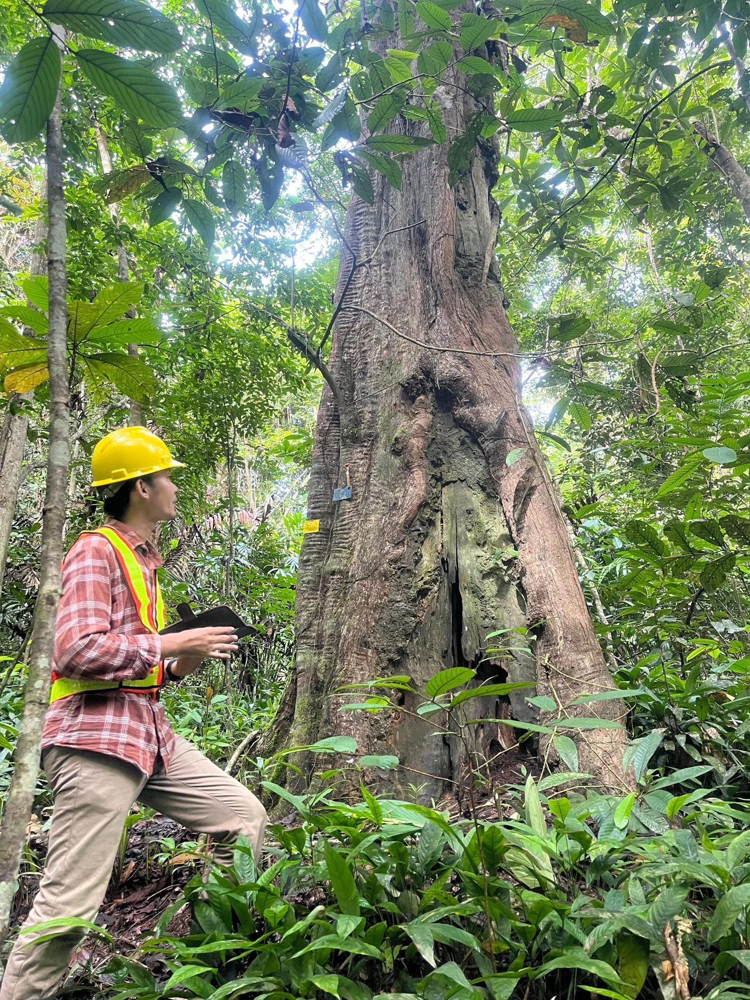

GHG accounting & ESG reporting
Developing inventory procedures and emissions calculation tools, coordinating ESG data, and supporting sustainability disclosures at company and group levels.
GHG inventory · Excel · GRI Standards
02 / Professional focus
At PT Mitra Murni Perkasa, part of MMS Group Indonesia, I support ESG work for an RKEF nickel smelter, connecting environmental data with reporting and assessment needs.
Developing inventory procedures and emissions calculation tools, coordinating ESG data, and supporting sustainability disclosures at company and group levels.
GHG inventory · Excel · GRI Standards
Analyzing climate projections and spatial data to support physical risk assessments and climate disclosures with reference to IFRS S2.
Climate projections · QGIS · ArcGIS Pro · Google Earth Engine
Assessing gaps against IFC Performance Standards, supporting Environmental and Social Action Plans, and reviewing Indonesian regulations and supporting evidence.
IFC Performance Standards · ESAP · Regulatory review

03 / A little about me
I studied Forestry at Universitas Gadjah Mada, with a focus on Silviculture, and continued through the Forest Engineer Program. My early work involved mangrove research, nursery management, and forest rehabilitation.
That background now informs my work in carbon projects and industrial sustainability. I use geospatial analysis to examine land-use change, and work with ESG data, standards, and climate projections to support practical assessments.
I’m interested in remote opportunities in ESG, carbon accounting, climate analysis, and GIS where I can contribute careful analysis and continue building my technical skills.
Forest Engineer Program · 2024 · GPA 3.96/4.00
Bachelor’s Degree in Forestry · 2019–2023 · GPA 3.50/4.00